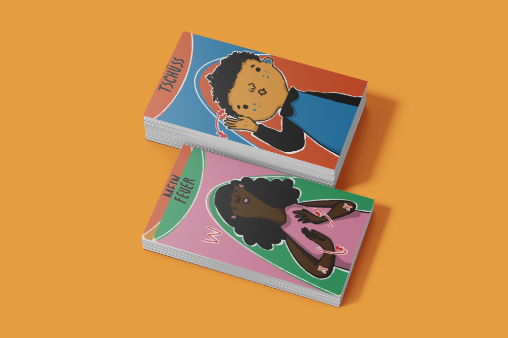
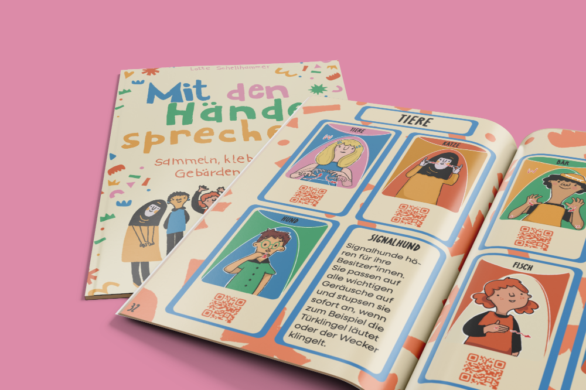
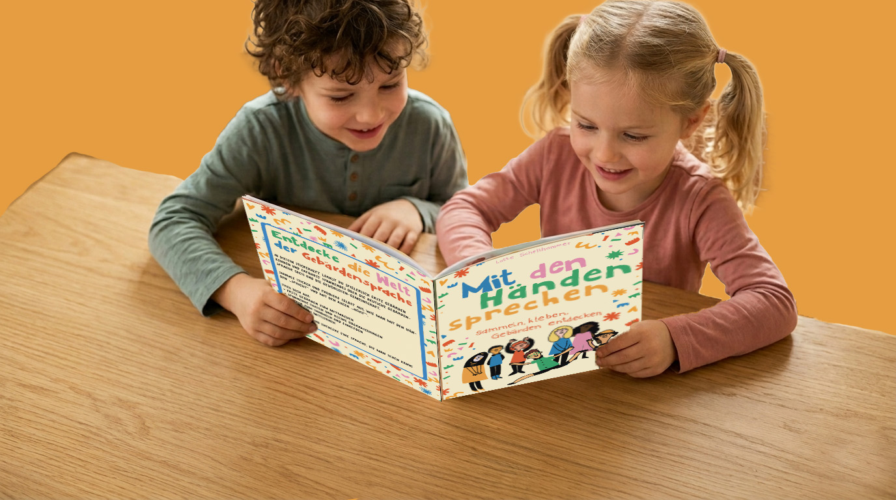

SCHÖN, DASS DU DA BIST!
Dieses Projekt ist dein bunter Einstieg in eine Welt, in der man mit den Augen „hört“ und mit den Händen „spricht“. Wenn wir lernen, auf unterschiedliche Arten miteinander zu kommunizieren, bauen wir Barrieren ab.
So einfach funktioniert es: Scanne mit deinem Smartphone die QR-Codes direkt neben den Stickern im Heft. Dadurch öffnet sich sofort das passende Video. Schau dir die Gebär- de genau an und mach sie einfach nach.
Viel Spaß beim Entdecken!


